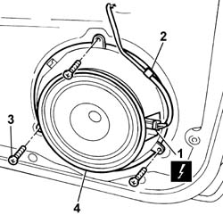

5570T91 Front SIDE LOUDSPEAKER. (one), left or right - R.R. with door panel removed
- Path
- Procedures > 55 ELECTRICAL EQUIPMENT > 5570 ACCESSORIES > 5570T car radio and car telephone > 5570T91 Front SIDE LOUDSPEAKER. (one), left or right - R.R. with door panel removed
- Kind
- repair procedure (removal / refitting; the operation number is the code)
- Applies to
- all engines; all production periods
- Interactive page
- https://sloeber94.github.io/elrnDB-fPnd/en/#/2753003
Applies to: all engines; all production periods
 Removing
Removing
 Refitting
RefittingDisconnect the battery negative terminal.
1. Disconnect the electrical connection.
 | Name | Connector |
|---|---|---|
1 | Speaker in left front door | P35 |
| Name | Connector |
|---|---|---|
1 | Speaker in right front door | P36 |
2. Release the wiring from the retaining clip.
3. Undo the retaining bolts.
4. Remove the speaker.

Applies to: all engines; all production periods
Refitting
RemovingPosition the loudspeaker in its seating and tighten the fixing bolts.
Connect the electrical connection.
| Name | Connector |
|---|---|---|
- | Speaker in left front door | P35 |
| Name | Connector |
|---|---|---|
- | Speaker in right front door | P36 |
Secure the wiring to the retaining clip.
Connect the battery negative terminal.
Topics that link to this page (22)
- 5505B11 front door wiring - r r
- 7005A04 front side door water guard protection - r r or replace with door panel removed
- 7005A05 front side door water guard protection r r or arrange
- 7005A28 front side door limiter- repair or replace
- 7005C10 front door outer handle - r r with door panel removed
- 7005C11 front side door outside handle r r
- 7005C15 front side door lock barrel (in handle) - r+r
- 7005C42 front side door barrel/lock connecting linkage - r r with door panel removed
- 7005C43 link connecting front side door barrels/catch - r+r
- 7005D14 front side door descending window glass - r r with door panel (and mount frame) removed
- 7005D15 front side door descending window glass r r
- 7005D20 front door window front guide - r r
- 7005D21 front door window front guide - r r
- 7005D24 front door window rear guide - r r
- 7005D25 front door window rear guide - r r
- 7005D35 front side door manual window glass r r
- 7005E91 One front door ANTI-BREAK IN PARTITION, left or right - R.R. with door panel removed
- 7005M26 ONE FRONT DOOR ELECTRIC WINDOW MECHANISM', LEFT OR RIGHT - R.R .
- 7005N20 front side door lock motor/catch assembly - rr with door panel and support frame removed
- 7005N21 front side door lock motor-lock assembley-r r
- 7055B38 SCUFF PANEL SIDE MOULDING (ONE) - R+R
- 7205E36 Stripping FRONT SIDE DOOR